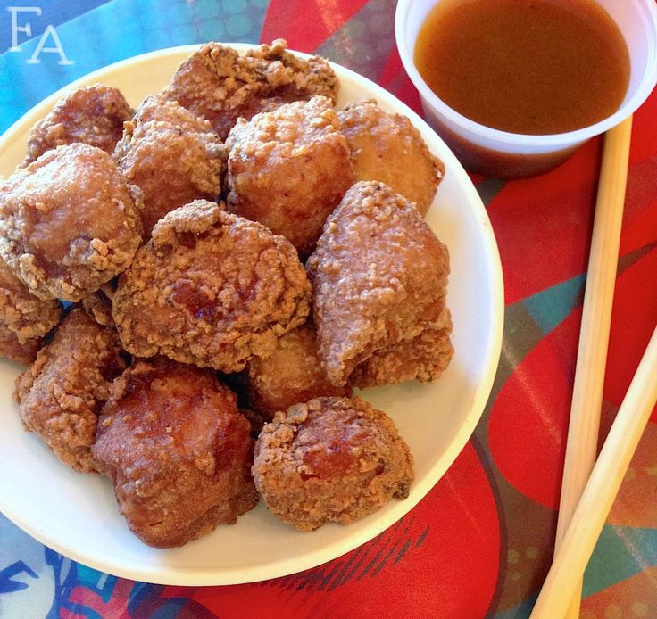

Karaage

Description
Karaage is Japanese fried chiken. It's a great appetizer.
Ingredients
- 1 ½ tablespoons low-sodium soy sauce
- 1 tablespoon honey
- 2 teaspoons minced garlic
- 2 teaspoons minced fresh ginger
- 1 pound skinless, boneless chicken thighs, cut into bite-sized pieces
- 1 egg
- 1 cup panko bread crumbs
- vegetable oil for frying
Steps
- Mix 1 1/2 tablespoon soy sauce, 1 tablespoon honey, garlic, and ginger together in a bowl. Add chicken; turn to coat. Marinate in the refrigerator, 8 hours to overnight.
- Whisk egg in a bowl until smooth.
- Pour panko bread crumbs into a shallow bowl. Dip chicken pieces in whisked egg and roll in panko until coated.
- Heat oil in a deep-fryer or large saucepan to 350 degrees F (175 degrees C). Cook chicken in batches in the hot oil until golden brown, about 5 minutes. Transfer to paper towels to drain excess oil.
- Mix Japanese mayonnaise, 2 tablespoons honey, Dijon mustard, mirin, and 1 tablespoon soy sauce together to make sauce. Pour sauce over chicken.